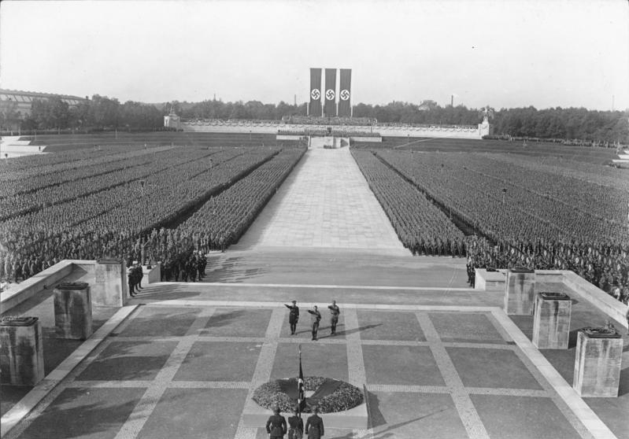
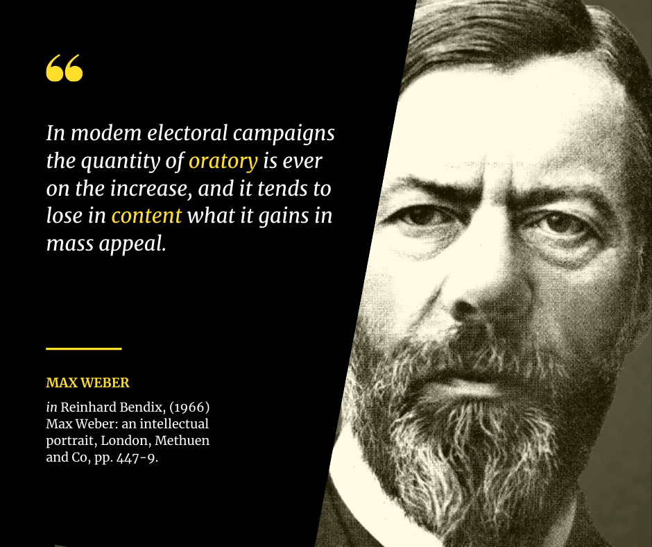
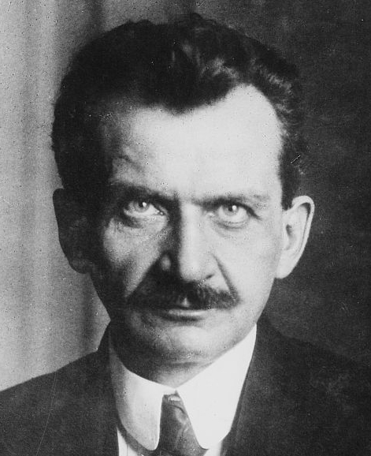
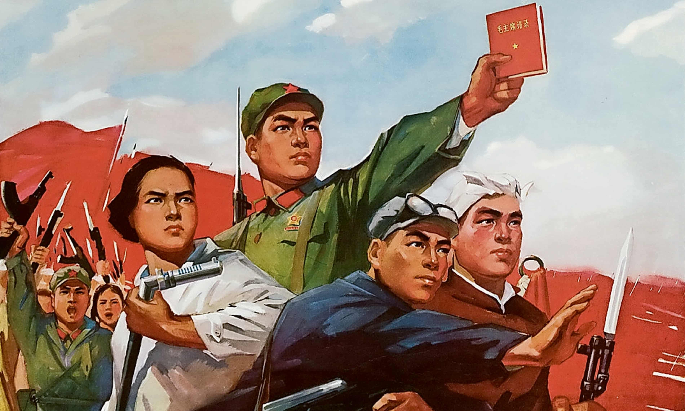
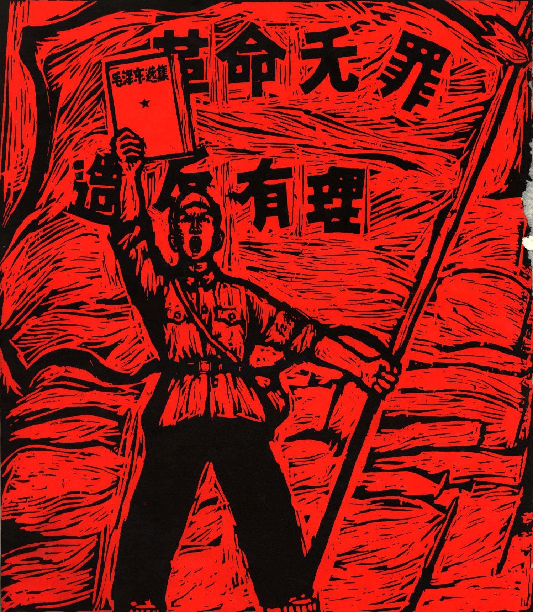
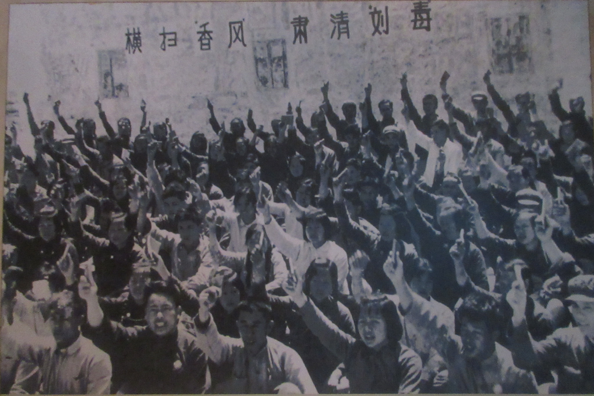
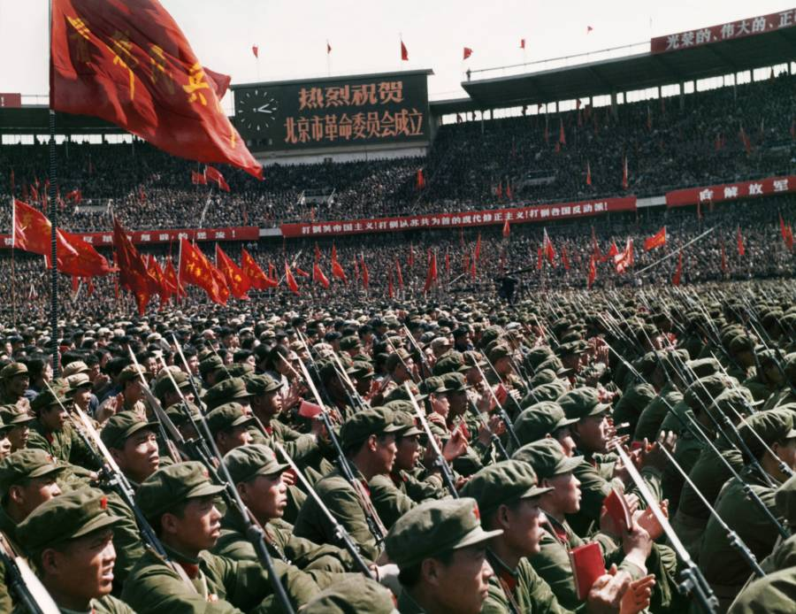

When Charisma Meets Power

Part I — The Theory
In 1922, Max Weber identified three sources of political authority: tradition, law, and charisma. The first two are stable — they survive the death of any individual. Charisma does not. It lives in one person, and demands total faith in that person.

Weber's three types of authority are not equal in practice. When charisma enters the room, the other two buckle.
"A certain quality of an individual personality by virtue of which he is set apart from ordinary men and treated as endowed with supernatural, superhuman, or at least specifically exceptional powers."— Max Weber, Economy and Society, 1922

Institutions — legislatures, courts, free presses — exist because the system expects leaders to be flawed. Madison put it plainly in Federalist No. 51: "If men were angels, no government would be necessary." Every check, every balance, every procedural delay is built on that assumption.
Charisma breaks the assumption. When followers believe a leader is exceptional, the checks start looking like obstacles. The followers want them gone. The leader, surrounded by devotion, starts to agree.
Weber saw further than the moment of seizure. Charismatic authority is unstable — it cannot outlast the leader. It must undergo what he called routinization: it hardens into bureaucratic rule, fractures into competing traditions, or the institutions hold and charisma fades. The next sections are three variations of that process — and the question of whether there is a fourth.
Part II — The Enabling
Berlin, March 23, 1933. The Kroll Opera House, draped in swastika banners. Hitler stands before the Reichstag and asks for the legal authority to rule by decree.
The Enabling Act would let him bypass parliament, bypass the constitution, bypass every safeguard the Weimar Republic had built. A democracy would become a dictatorship — through a vote.
The Nazi Party holds 288 seats. They don't have a two-thirds majority alone. But the SA stormtroopers stand outside the building. The Communist Party's 81 deputies have already been arrested or barred from attending.
The Centre Party caves. Hitler promises to respect the Church. The promise is worthless, but the Centre's leader, Ludwig Kaas, tells his caucus to vote yes. One by one, the smaller parties fall in line. The pressure of the crowd, the SA outside, the momentum — resistance feels pointless.

Only the Social Democrats hold. 94 votes against, in a room full of men who have already surrendered. Otto Wels, the SPD leader, stands to speak: "You can take our liberty and our lives, but you cannot take our honor."
No tanks. No gunfire. The institutions of German democracy were not destroyed by force. Elected officials handed them over, to a man whose crowds made resistance feel pointless.
Part III — The Fire

Beijing, May 1966. Mao Zedong is 72. He has led the People's Republic for seventeen years, but his grip on the Party is slipping. Rivals in the Politburo are quietly sidelining him.
So Mao goes around them. He bypasses his own party, his own government, his own chain of command. He writes a big-character poster — "Bombard the Headquarters" — and calls on China's students to attack the system he built.
"To rebel is justified — bombard the headquarters!"— Mao Zedong, 1966
Mao mobilizes millions of Red Guards. They flood the streets, drag professors from classrooms, beat officials in public, destroy temples, burn books. The chaos is total. The loyalty is absolute.

Red Guard factions turn on each other. Provincial governments collapse. Liu Shaoqi — the second most powerful man in China — is dragged from his home and left to die in detention. The revolution is eating its own.

Even Mao cannot stop it. He sends the army to suppress the Red Guards — the very forces he summoned two years earlier. The weapon he built no longer answers to him.

The Cultural Revolution officially ends. The toll: an estimated 500,000 to 2 million dead, up to 36 million persecuted.
Hitler got the institutions out of his way. Mao went further — he unleashed a force that got out of his way.